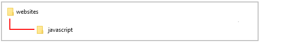
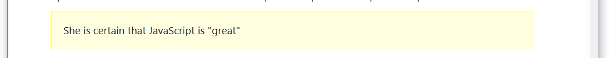
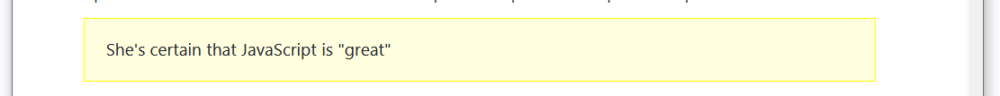
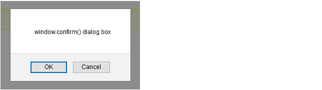
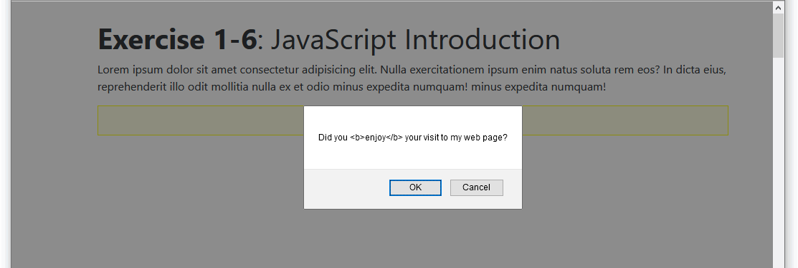
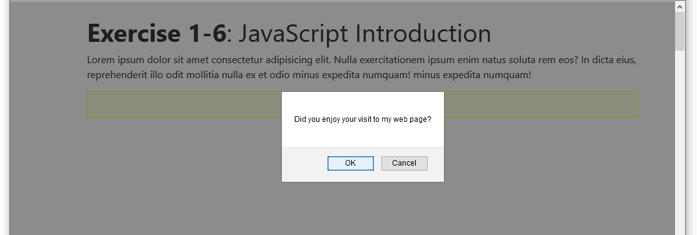
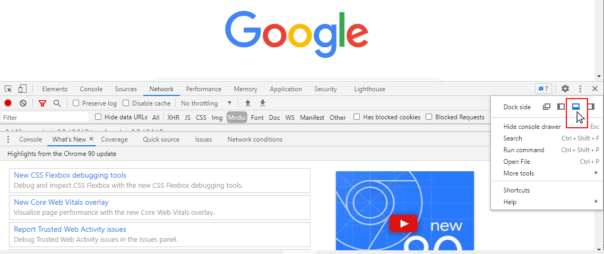
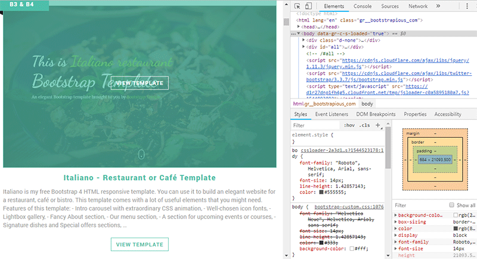
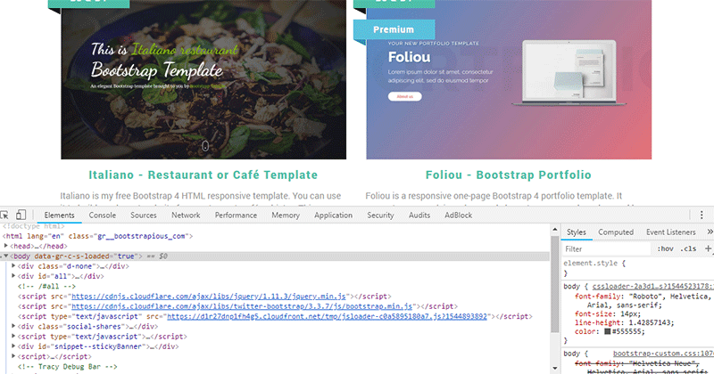

Learning Goals
At the end of this Lesson you will be able to:
- Separate JavaScript code from the remainder of a web page using the <script> … </script> tag pair.
- Write text with HTML formatting to a web page using the document.write() statement.
- Use the forward slash (/) to ‘escape’ special characters that cannot be typed directly in JavaScript statements.
- Create pop-up dialog boxes using the window.alert() and window.confirm() statements
- Concatenate (join together) strings of text in JavaScript statements.
- Use the JavaScript Developer Console
In this Lesson you will meet the following terms:
- String
- Concatenation
- Escape code
- JavaScript statement
Exercise Files
In this Lesson you will work with the following web pages.
Contents
Downloading your JavaScript exercise files
Exercise 1.1: Editing JavaScript Code
Exercise 1.2: Concatenating strings
Typing and escaping special characters
Exercise 1.3: Escaping special characters
Combining HTML with JavaScript
Exercise 1.4: Inserting HTML tags within a script
About single and double quotes
Creating line and paragraph breaks
Avoid paragraph breaks within statements
Working with JavaScript dialog boxes
The window.confirm() dialog box
Exercise 1.5: Creating a window.alert() dialog box
Exercise 1.6: Creating a window.confirm() dialog box
Using the JavaScript Developer Console
Downloading your JavaScript exercise files
Follow these steps to download the exercise files for this JavaScript Tutorial:
- In your ‘main’ websites folder, create a new 📁 sub-folder with this name: javascript 
- Download this compressed file: javascript-exercises.zip
- Copy the ZIP file to your new 📁 websites/javascript sub-folder.
- Unzip the file.
- This creates a new sub-folder of the 📁 websites/javascript folder with the name exercises.
- You no longer need the downloaded ZIP file. So you can delete javascript-exercises.zip.
Your exercise files are now ready for you to work with.
The HTML <script> tag
When a web page contains both HTML and JavaScript code, how does the web browser know which type of code it is dealing with at any one time?
The answer to that question is provided by the <script> … </script> tag pair. This says to the web browser:
"Everything you read between these opening and closing tags is a script."
<script> Your JavaScript code goes here </script>
Note that the <script> … </script> tag pair is part of HTML, not JavaScript.
Exercise 1.1 take you through the steps of editing an already existing line of JavaScript code contained in a web page.
Exercise 1.1: Editing JavaScript Code
In your javascript/exercises/1/ sub-folder, open the following file in your VS Code and web browser:
You can see some JavaScript code within the body of the web page within a <div> … </div> tag pair with a class name of js-box.
<div class="js-box"> <script> document.write("Hello. This is my first script."); </script> <div>
It produces the output shown below in the web browser window.

In VS Code, edit the text inside the <script> … </script> tag pair as follows.
document.write("Hello. This is my very first script.");
Save your web page and reload your web browser.
The result should look as shown below.

You can close the exercise-1-1.html file when finished.
Strings and concatenation
In Exercise 1.1, the text "Hello. This is my first script." is an example of a string.
In JavaScript a string is simply any collection of letters, numbers or other keyboard characters enclosed within single or double quotes.
A string can consist of one or more blank or white spaces, and nothing else. The following script writes a single blank space to the web browser window.
document.write(" ");
String
One or more letters, numbers, symbols, punctuation characters or blank spaces, enclosed within a pair of quotes. Generally, double (" ") rather than single (' ') quotes are used to enclose a string.
You can join two or more strings together so that they display as a single string in the web browser window. String joining is achieved with the plus (+) operator, and is known as concatenation. Consider the following script.
document.write("Last train"+"to Clarksville.");
This produces the following output in a web browser.

Notice anything missing? Yes: a single white space at the location where the two strings join together. You can edit the code in any one of three ways to correct this problem.
- One approach is to amend the first string by inserting a white space at the end of it.
document.write("Last train "+"to Clarksville."); - A second approach is to amend the second string by inserting a white space at the start of it.
document.write("Last train"+" to Clarksville."); - A third approach is to insert the white space as a separate third string between the two existing strings.
The result is not two but three strings joined together.
document.write("Last train"+" "+"to Clarksville.");
Whichever approach you take the corrected code displays as follows in the browser window.

Concatenation
The joining together of separate strings with the plus (+) operator so that they display as a single string in the web browser window. You may need to insert white space characters to preserve readability between joined strings.
Exercise 1.2 takes you through the steps of concatenating a number of strings.
Exercise 1.2: Concatenating strings
Open the following file in your VS Code and web browser:
It contains the following script.
document.write("Thank you for visiting my web page.");
Edit the script code as shown below.
document.write("Thank "+"you for visiting "+"my web"+" "+"page.");
Save your web page and reload your web browser.
The result should look as shown below.

You can close the exercise-1-2.html file when finished.
Typing and escaping special characters
All characters are not the same, at least not when used with JavaScript statements.
There are a number of keyboard characters that produce errors when typed in JavaScript.
Among these special characters are the double quote ("), the single quote ('), the forward slash (/) and the backslash (\).
JavaScript overcomes this problem by providing a so-called escape character: the backslash (\).
Character |
Un-escaped Character |
Escaped Character |
Double quote |
" |
\" |
Single quote |
' |
\' |
Forward slash |
/ |
\/ |
Backslash |
\ |
\\ |
The following JavaScript statement does not contain an escape code (\) for the two double quotes characters ("). As you can, VS Code highlights the error with a wavy underline.

You correct this by escaping the two double quotes (") characters within the text as follows.

Here's another example that produces an error. This one contains both double and single quotes.
document.write("She said: "I'm a huge fan of JavaScript.");
You correct this statement by escaping both types of quotes within the text as follows.
document.write("She said: \"I\'m a huge fan of JavaScript.\"");
You may want to use the forward slash (/) character when referring to file paths on a computer, and the backslash (\) character to closing tags in HTML code.
The following statement provides an example.
document.write("<b>The file is in the C:/pdfs folder.</b>");
You correct this statement by escaping both types of slashes as follows.
document.write("<b>The file is in the c:\/pdfs folder.<\/b>");
Escaped Character
A character that, when used in a JavaScript string, needs to be preceded by a backslash (\) to display correctly. Characters that need to be escaped include the double quote (\"), single quote (\'), forward slash (\/) and the backslash (\\) character itself.
In Exercise 1.3 you will practice escaping characters within a JavaScript statement.
Exercise 1.3: Escaping special characters
Open the following file in your VS Code and web browser:
It contains the following script.
document.write("She is certain that JavaScript is "great"");
Your web browser will not display the line of text because the double quotes are not escaped.
Edit the script code as shown below.
document.write("She is certain that JavaScript is \"great\"");
Save your web page and reload your web browser. The line of text now displays correctly.
Edit the script code as shown below.
document.write("She\'s certain that JavaScript is \"great\"");
Resave the file and reload your web browser. The line of text displays correctly because the single quote is escaped.
Edit the script code as shown below.
document.write("She\'s certain that JavaScript is <b>\"great\"<\/b>");
Resave the file and reload your web browser. The line of text displays correctly because the forward slash character in the closing </b> HTML tag is escaped. The result should look as shown below.

You can close the exercise-1-3.html file when finished.
Combining HTML with JavaScript
You have learnt how to insert JavaScript code within a HTML document. And in the Exercise 1.3 you have discovered that the opposite is also possible: HTML tags can be inserted within JavaScript code. Consider the following example.
<script>
<i>
document.write("this string in displayed in italics.");
</i>
</script>
The above code produces an error because the web browser expects to find JavaScript code after the opening <script> tag; instead it finds the HTML <i> tag. The following code does work.
<script>
document.write("<i>this string in displayed in italics.<\/i>");
</script>
The second example differs from the first in that the <i> … </i> tag pair is now mixed in with the string text used by the script. Also notice that the forward slash (/) in the closing italic tag is escaped.
In Exercise 1.4 you will include HTML tags within a string to produce formatted text.
Exercise 1.4: Inserting HTML tags within a script
Open the following file in your VS Code and web browser:
It contains the following script.
document.write("A heading. Some text with bold formatting.");
Edit the script code as shown below.
document.write("<h1>A heading<\/h1><p>Some text with <b>bold<\/b> formatting.<\/p>");
(You should type the above code on a single line.)
Save your web page and reload your web browser.
The result should look as shown below.

You can close the exercise-1-4.html file when finished.
About single and double quotes
In JavaScript you can enclose a string within either single or double quotes. A web browser displays the following two strings in exactly the same way:
document.write("This is a sample string.");
document.write('This is a sample string.');
JavaScript programmers tend to prefer double quotes because they may want to include some text within single quotes in a string.
Creating line and paragraph breaks
The web browser does not insert a line break after a document.write() statement. In your VS Code, the following might look like four separate text lines.
document.write("One for sorrow,");
document.write("Two for joy.");
document.write("Three for a girl,");
document.write("And four for a boy.");
But in the web browser these four document.write() statements display as shown.

To insert line breaks you could include a separate document.write() statement for line break.
document.write("One for sorrow,");
document.write("<br>");
document.write("Two for joy.");
document.write("<br>");
document.write("Three for a girl,");
document.write("<br>");
document.write("And four for a boy.");
A more common approach is to include the line break at the end of the document.write() statement.
document.write("Three for a girl,<br>");

You could also use paragraph breaks within a document.write() statement.
document.write("<p>One for sorrow,<\/p>");
document.write("<p>Two for joy.<\/p>");
document.write("<p>Three for a girl,<\/p>");
document.write("<p>And four for a boy.<\/p>");

Commenting your scripts
It's good practice to add comments to your scripts. Text within the comment tags does not affect the working of the script, and does not display in the browser window. A sample comment is shown below.
/* This script changes the page background colour */
Comment tags always come in pairs. The opening tag is a forward slash and an asterisk; the closing tag is the reverse. Note that the asterisks go on the inside and the slashes on the outside.
The above is an example of a multi-line comment, which you can use for one, two, three or more lines of commented text.
To comment out just a single line in JavaScript, begin the line with two forward slash (//) characters.
// This script changes the page background colour
Making a JavaScript statement
In JavaScript as in other scripting and programming languages the word statement has a particular meaning.
It is an instruction to perform a particular action. The semi-colon at the end of the llne (;) acts as a statement terminator. It says to JavaScript:
"The statement you have just read is now finished."
Here are a few JavaScript statements of the kind that you will meet in future chapters with explanatory comments.
/* This statement adds two numbers */ sumTotal = firstNumber+secondNumber; /* This statement displays the result of a calculation */ window.alert(result);
/* This statement places the value of a form field in a variable */ surname = document.myform.surname_field.value;
And here is a document.write() statement of the kind you have been working with in this Lesson.
document.write("JavaScript is one word.");
JavaScript Statement
An instruction to JavaScript to perform a particular action. The semi-colon (;) acts as a statement terminator.
Avoid paragraph breaks within statements
Unlike HTML and CSS, JavaScript does not ignore line breaks created by pressing the Enter key.
Pressing the Enter key while typing a statement usually causes the statement to fail when the script is run in a web browser.
The following JavaScript statement runs without error.
document.write("Did you enjoy your visit to my web page?");
This statement, however, does result in an error.
document.write("Did you enjoy your
visit to my web page?");
Working with JavaScript dialog boxes
You have learnt how to use JavaScript's document.write() statement to output text and HTML tags to the web browser window.
Now meet two other statements for displaying information to the web page visitor.
Rather than show the information in the browser window, however, these two create dialog boxes that appear in front of the browser window.
The window.alert() dialog box
This type of dialog box offers just a single button: an OK button.

The window.confirm() dialog box
This type of dialog box offers two buttons: OK and Cancel.

Here are three points to remember about the dialog box statements:
- Text-only: Both dialog boxes can display only text without HTML formatting.
- Concatenation: You can join together strings inside window.alert() and window.confirm() statements.
- Escape codes: You must escape special characters inside the window.alert() and window.confirm() statements.
In Exercise 1.5 you will create a window.alert() dialog box.
Exercise 1.5: Creating a window.alert() dialog box
Open the following file in your VS Code and web browser:
It contains the following script.
document.write("Hope you enjoy your visit.");
Edit the script code as shown below.
document.alert("Hope you enjoy your visit to my web page.");
Save your web page and reload your web browser.
You can see an error in the web browser window. The reason for this is that you have incorrectly combined the JavaScript terms 'document' and ' alert()'.
Edit the script as shown below. Resave your file and reload your browser.
window.alert("Hope you enjoy your visit to my web page.");
The following dialog box should display in front of your web browser window.

Click OK to close the dialog box.
You can close the exercise-1-5.html file when finished.
Next, in Exercise 1.6, you will create a window.confirm() dialog box.
Exercise 1.6: Creating a window.confirm() dialog box
Open the following file in your VS Code and web browser:
It contains the following script.
document.write("Did you enjoy your visit?");
Edit the script code as shown below.
window.confirm("Did you <b>enjoy</b> your visit to my web page?");
Save your web page and reload your web browser.
The following dialog box should display in front of your web browser window.
You can see that the HTML bold tag pair does not format the enclosed word, but is displayed as text.
Edit the script code as shown below.
window.confirm("Did you enjoy"+" "+"your visit to my web page?");
Resave the file and reload your web browser. The dialog box should now look as shown below. Click OK or Cancel to close the dialog box.
You can close the exercise-1-6.html file when finished.
Using the JavaScript Developer Console
Developer Tools (also known as DevTools) is an essential item in the toolbox of every front-end developer. And because DevTools are built-in to every web browser – Brave, Chrome, Safari, Edge, and Firefox or whatever – you take advantage of their many features without needing to purchase, install and configure extra software.
Opening the DevTools window
Here's a quick and easy way to open DevTools. Using your mouse, click on the three vertical dots icon at the top-right of your browser window. From the dropdown menu displayed, click the More tools option to display a second menu. On that menu, click the last option, Developer tools.
Of the nine tabs or panels within the DevTools window, we will focus on the second one, named Console.
Changing the DevTools position
To position or ‘dock’ the DevTools window:
- Open the DevTools window.
- Near the top-right of the DevTools window, click the vertical ellipses (three dots) icon. 
- Click the docking position you want for the DevTools window.
Below is an example of the DevTools window docked on the right.
And here is an example of the DevTools window docked along the bottom.
Changing the DevTools font size
To change the font size in the DevTools window, press the Ctrl key followed by the plus (+) or minus (-) key. To reset, press Ctrl and 0.
Working with the Console
You can use the Console to display or 'log' information as part of your JavaScript development process. You can even use it to interact with a web page by performing JavaScript expressions within the page’s context.
You can also display into the Web Console with the keyboard shortcut Ctrl + Shift + K on Linux and Windows, or Command + Option + K on macOS.
Within the Console, you can type JavaScript code. For example, type an alert statement that outputs out the string Hello, World!:
>> alert("Hello, World!");
When you press the ENTER key, you should see the following alert pop up in your browser:

Rather than rely on annoying pop-up alerts to track the progress of your code, you can instead output messages to the Console with the console.log command.
To output the Hello, World! string, for example, you would type the following into the Console:
>> console.log("Hello, World!");
Within the console, you’ll receive the following output:
Output Hello, World!
In effect, the JavaScript Console provides you with a space to try out JavaScript code in real time by letting you use an environment similar to a terminal shell interface.
For example you can perform arithmetic in the Console:
>> console.log(2 + 6);
Output 8
Uploading your JavaScript exercise files to GitHub
Follow these steps below to upload your entire 📁 /javascript sub-folder to your website on GitHub.
- Sign in to Github and click the name of the repository (‘repo’) that holds your web pages.
- On the next GitHub screen displayed, click the Add file button near the right of the screen and then choose Upload files from the dropdown list.

- In File Explorer (Windows 10) or Finder (Apple Mac), select your entire 📁 /javascript sub-folder, and drag-and-drop it to your repository on GitHub.

- Scroll down to the bottom of the GitHub screen, and accept or edit the short message (Add files via upload) in the Commit changes box. Finally, click the green Commit changes button to upload your entire 📁 /javascript sub-folder and all the exercise files it contains.
Your uploaded files are published on GitHub at a web address similar to the following, where username is the username you have chosen for your GitHub account:
https://username.github.io/javascript/exercises/1/exercise-1-1.html
https://username.github.io/javascript/exercises/1/exercise-1-2.html
https://username.github.io/javascript/exercises/1/exercise-1-3.html
https://username.github.io/javascript/exercises/1/exercise-1-4.html
https://username.github.io/javascript/exercises/1/exercise-1-5.html
https://username.github.io/javascript/exercises/1/exercise-1-6.html
It may take a few minutes for your uploaded files to appear on GitHub.
Lesson summary
JavaScript code in a web page must be enclosed with the HTML <script> …. </script> tag pair as follows.
<script> Your JavaScript code goes here </script>
A script is made up of one or more statements. Each statement is an instruction to JavaScript to perform a particular action or task. The semi-colon (;) acts as a statement terminator.
A string is any collection of alphabetic, numeric or punctuation characters, or white (blank) spaces enclosed within single or double quotes.
You can use the document.write() statement to write strings, with or without HTML formatting, to the web browser window. Insert the text and any HTML tags within the parenthesis of the document.write() statement as shown in the example below.
document.write("Thank you for visiting my web page.");
A number of keyboard characters produce unexpected results or errors when typed directly into a document.write() or other JavaScript statement. Among these are the double quote ("), the single quote ('), the forward slash (/) and the backslash (\).
To display such characters correctly, you must escape them by preceding them with a forward slash as follows: \", \", \\ and \/. An example of a string with escaped characters is shown below.
document.write("She\'s certain that JavaScript is <b>\"great\"<\/b>");
Concatenation is the joining together of separate strings with the plus (+) operator so that they display as a single string in the web browser window. You may need to insert white space characters to preserve readability between joined strings. An example is shown below.
document.write("Last train"+" "+"to Clarksville.");
The document.write() statement does not insert a line break after the string that is written to the browser window. To follow a string with a line break, include the HTML line break tag as follows.
document.write("Three for a girl,<br>");
Unlike HTML JavaScript does not ignore line breaks created by pressing the Enter key. Pressing Enter while typing a JavaScript statement will almost certainly cause an error to result.
The statement below provides an example of an incorrectly inserted line break.
document.write("Did you enjoy your
visit to my web page?");
The window.alert() statement creates a dialog box in front of the browser window containing a text message and an OK button. The window.confirm statement also creates a dialog box with a text message, but displays two buttons: OK and Cancel.
Both dialog boxes can display only unformatted text. Strings can be concatenated within a dialog box, and special characters must be escaped.
It is good practice to include comments with your scripts. Text within comment tags does not affect the operation of the script, and does not display in the browser window.
/* This script changes the page background colour */
Comment tags always come in pairs. The opening tag is a forward slash and an asterisk; the closing tag is the reverse. The asterisks go on the inside and the slashes on the outside.
Return to Contents.